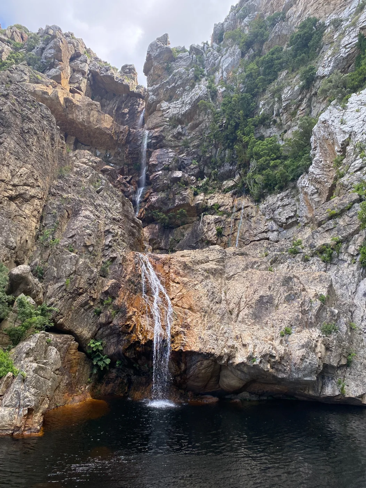
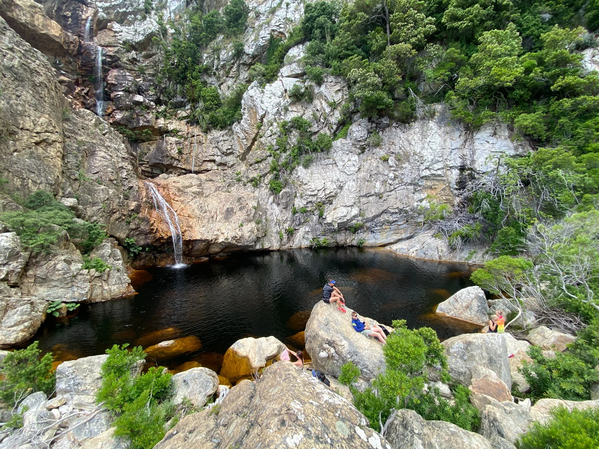
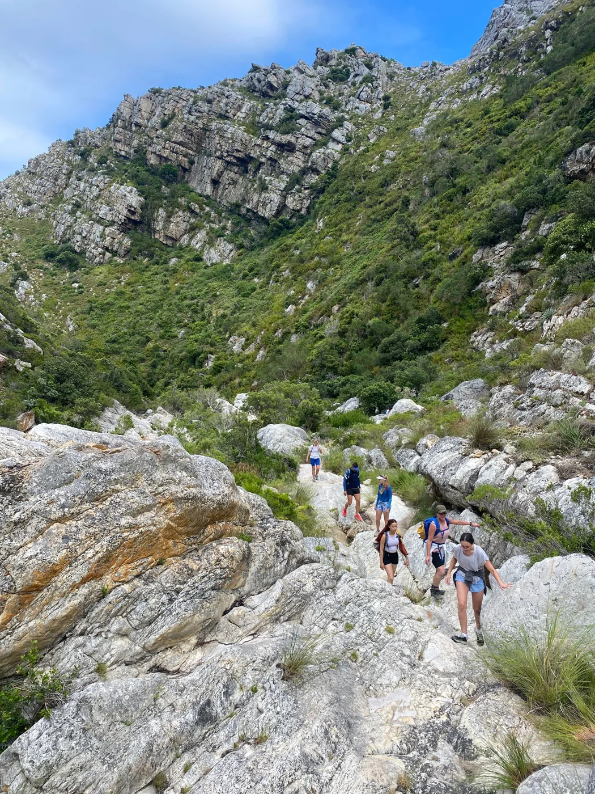
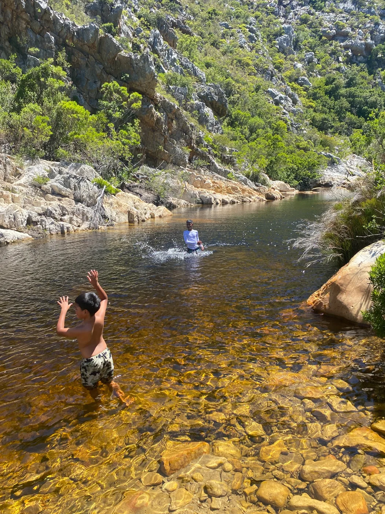
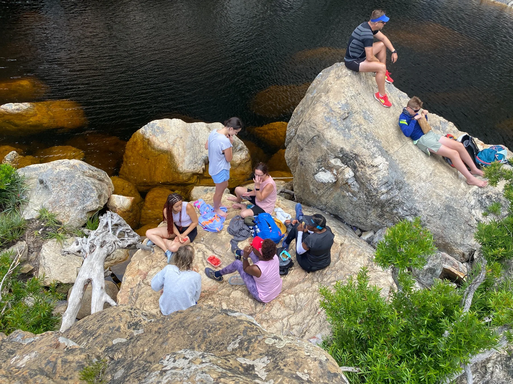

Into the gorge
Leave the road behind and follow the rocky trail beside the Steenbras River, surrounded by mountains and fynbos.
Hike the gorge. Swim the pools. Discover the waterfall.
Escape into the rugged beauty of Steenbras Nature Reserve for a refreshing combination of hiking, swimming and spectacular mountain scenery. Our trail winds alongside and above the Steenbras River as we enter a rocky gorge framed by fynbos and towering cliffs.
Expect uneven rock underfoot and some steep inclines as we climb for roughly 45 minutes to the first large natural pool. From there we continue for about another 30 minutes to the highlight: a breathtaking pool beneath a multi-tiered waterfall.
We take a generous break to enjoy the surroundings, with swimming optional when conditions are safe. On the return journey, we stop at another of our favourite pools before making our way back along the gorge.
It's an active day with plenty of time to appreciate the scenery — not a race to the top.
Distance: ±8 km round trip
Time: ±5–6 hours including pool breaks
Difficulty: Moderate
Terrain: Rocky, uneven paths and some steep inclines
Swimming: Optional; subject to guide assessment
Location: Steenbras Nature Reserve, Gordon's Bay
Leave the road behind and follow the rocky trail beside the Steenbras River, surrounded by mountains and fynbos.
After around 45 minutes of climbing over uneven terrain, arrive at the first large natural pool.
Continue roughly 30 minutes to a dramatic multi-tier waterfall and take time to enjoy the pool and scenery.
On our way back, enjoy another beautiful pool stop before returning along the gorge.





Swimming is optional and depends on water conditions. Recent rainfall, river levels and forecasts may affect the route or departure. Chacma baboons may be present: keep food secure, never feed or approach them, and follow your guide's instructions. Safety always comes first.
Permits included on approved dates. Optional return transport from Cape Town is subject to availability.
Outdoor Addicts transport is limited to 6 guests and subject to availability. For larger groups, private transfers can be arranged and quoted separately.